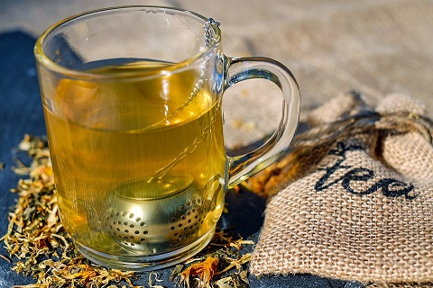
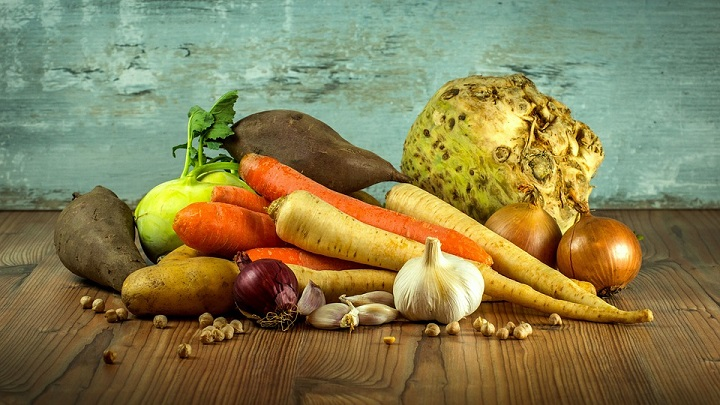
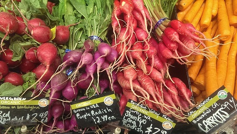

Herbal Tea's



Some feel that the term tisane is more correct than herbal tea or that the latter is even misleading, but most dictionaries record that the word tea is also used to refer to other plants beside the tea plant and to beverages made from these other plants. In any case, the term herbal tea is very well established and much more common than tisane.The word tisane was rare in its modern sense before the 20th century, when it was borrowed in the modern sense from French. (This is why some people feel it should be as in French, but the original / continues to be more common in US English and especially in UK English). More text...